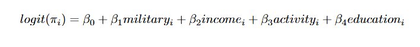
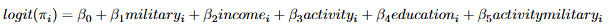
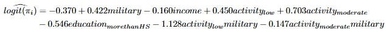
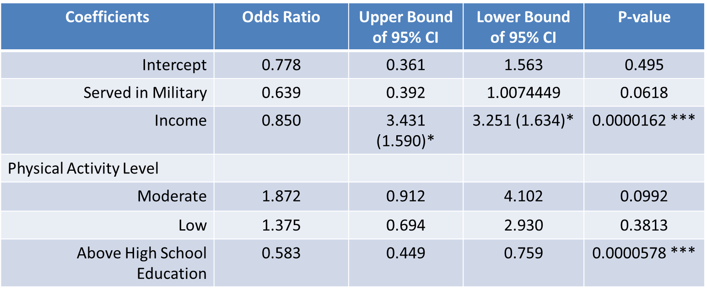
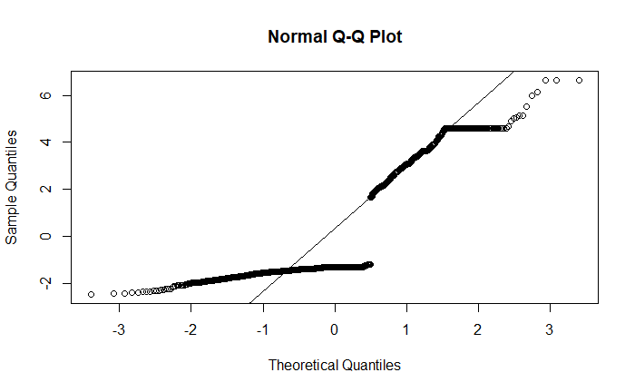
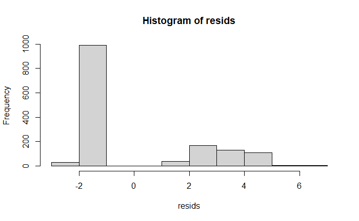
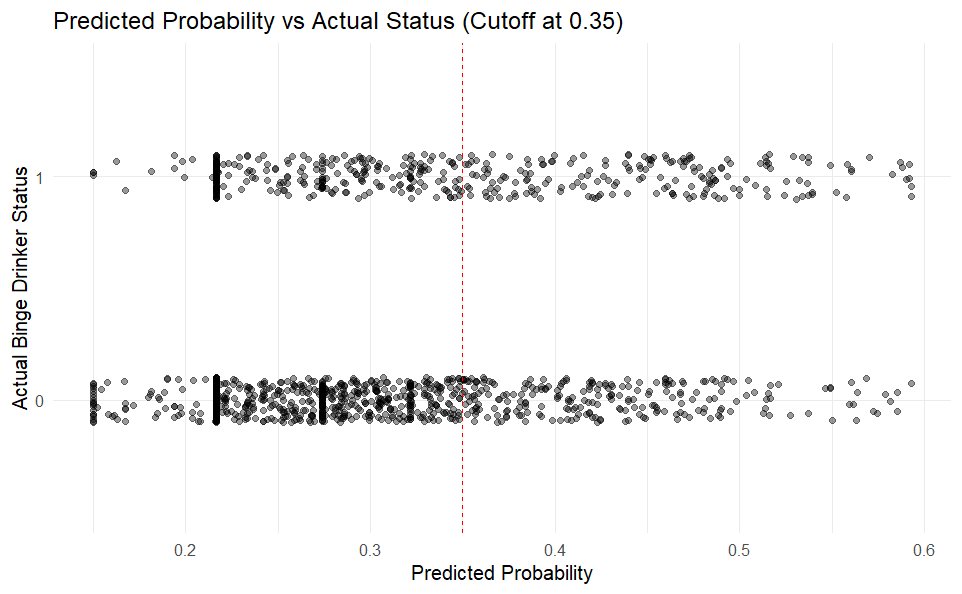

Military service members are commonly perceived to have higher rates of hazardous alcohol use than civilians. Prior work by Meadows et al. used logistic regression to examine binge drinking among service members based on perceived alcohol culture, finding that education was a significant control variable. Separately, Dunn et al. found that more active college students were more likely to binge drink, raising the question of whether the high physical activity associated with military life might explain elevated binge drinking rates.
This study combines those threads: controlling for income, physical activity, and education, does military service independently predict binge drinking? Based on anecdotal experience and societal stereotypes, we hypothesized a positive association.
Data came from the August 2021–August 2023 National Health and Nutrition Examination Survey (NHANES), a multi-year, stratified, clustered four-stage sample representing the noninstitutionalized civilian U.S. population. The final analytic sample was restricted to adults aged 21 to 80, yielding n = 1,477.
Binge drinking (the response variable) was binary: respondents who reported consuming more than 4/5 drinks in a 2-hour period at least 3–6 times in the past year were coded as binge drinkers. Military service was also binary, based on self-reported active-duty service in the U.S. Armed Forces, Reserves, or National Guard.
Control variables required some transformation. Income was expressed as a ratio of family income to the poverty line (0–5). Physical activity was derived from two-part frequency questions and collapsed into a three-level categorical variable (low/medium/high) after removing unfeasible extreme responses. Education was dichotomized into less than, or at least, a high school diploma.


We fit two logistic regression models predicting the log-odds of binge drinking. The general model included military service, income, physical activity level, and education as predictors:
logit(π) = β₀ + β₁·Military + β₂·Income + β₃·ActivityLevel + β₄·Education
An interaction model added a military × physical-activity interaction term, motivated by an interaction plot (Figure 1) showing non-parallel slopes across activity levels for military vs. non-military respondents. The two models were compared using a nested ANOVA likelihood-ratio test.
We evaluated validity conditions (linearity, independence, normality, equal variance) via a Normal Q-Q plot, histogram of residuals, and residuals vs. predicted values plot. We then classified predictions using a 0.35 cutoff, chosen because 30.8% of the sample were binge drinkers, making 0.5 too conservative.

The nested ANOVA comparison returned a chi-squared p-value of 0.294, providing no evidence that the interaction model improved on the general model. All interpretation focuses on the general model.
The fitted general model was:
logit(π̂) = −1.267 + 0.639·Military − 0.163·Income + 0.134·ActivityMed − 0.045·ActivityLow + 0.540·AboveHS
Odds ratios and 95% confidence intervals for each predictor:
| Predictor | Odds Ratio | 95% CI | p-value |
|---|---|---|---|
| Military service | 0.639 | (0.392, 1.007) | 0.062 |
| Income (per unit) | 0.850 | — | < 0.001 |
| Activity: moderate vs. high | 1.872 | (0.912, 4.102) | 0.099 |
| Activity: low vs. high | 1.375 | (0.694, 2.930) | 0.381 |
| Above HS education | 0.583 | (0.449, 0.759) | < 0.001 |

Validity conditions were not met. The Normal Q-Q plot showed residual curvature (failing linearity), and the histogram of residuals was right-skewed (failing normality). These violations mean the regression results should be interpreted with caution.


At a 0.35 cutoff, the model achieved 65.81% accuracy. A naive classifier that always predicts "non-binge drinker" achieves 69.19%. A McNemar test comparing the two returned p = 0.998; the model did not perform significantly better than the baseline.

The results pointed in the opposite direction from the hypothesis. Military service was associated with lower odds of binge drinking (OR = 0.639, p = 0.062), approaching but not reaching the 0.05 threshold. Income and education emerged as the more robust and highly significant predictors.
The study faced several limitations. The physical activity measure required collapsing a two-part quantitative question into a three-level categorical variable, losing precision. The 2021–2023 NHANES collection period was affected by COVID-19, which may have compressed participation and changed behavior. The model failed both key validity conditions and could not outperform a trivial classifier.
Future work should use a continuous physical activity metric, draw on a broader NHANES time window, and consider more granular controls for alcohol culture and occupational context. If the negative association holds in larger, better-controlled studies, it could have implications for how alcohol policy is targeted across populations.